Antes de começar
CaVeSal® Emergências Obstétricas é uma ferramenta de apoio à decisão clínica para o plantão e a sala de parto. Organiza-se em quatro abas grandes: Tenho uma emergência, Códigos (Código Vermelho, Código SHG, Código Amarelo — Sepse e Código Azul Obstétrico), Parto e puerpério (com a tromboprofilaxia) e Resultado, que resume o diagnóstico e a conduta. Inclui também a seção Pacientes, um modo voz mãos livres, o Modo Guia com as diretrizes resumidas e um simulador de casos.
Os dados comuns da paciente são inseridos uma única vez na barra superior e copiados automaticamente para todos os módulos. Cada cartão mostra sua fonte no rodapé e, quando há mais de um guia com bom respaldo, um seletor para escolher o critério.
Tudo é calculado no seu dispositivo. O app funciona sem conexão depois de instalado e não envia dados de pacientes a servidores.
Demo e versão completa
Demo gratuita (cavesal.app/cavesal-emergencias/demo/): índice de choque, PAM e IMC, qSOFA pontual, Escala de Alerta Obstétrico em versão estática (um registro, sem acompanhamento), o simulador, os exemplos pré-carregados e o Resultado na tela (sem salvar nem exportar). Tudo da versão completa aparece com cadeado 🔒, para você saber que existe, incluindo Pacientes 🔒.
Versão completa (cavesal.app/cavesal-emergencias/full/): soma o Código Vermelho completo, Código SHG, sangramento e coagulação, sepse com Critérios da Califórnia, SIRS e MEOWS, Código Azul Obstétrico, tromboprofilaxia, parto e puerpério com partogramas e Robson, o modo voz mãos livres, a Escala de Alerta dinâmica com relógio da hora de ouro, o Modo Guia, a ponte com a CaVeSal® IA e Pacientes com casos salvos e exportação em PDF e Word.
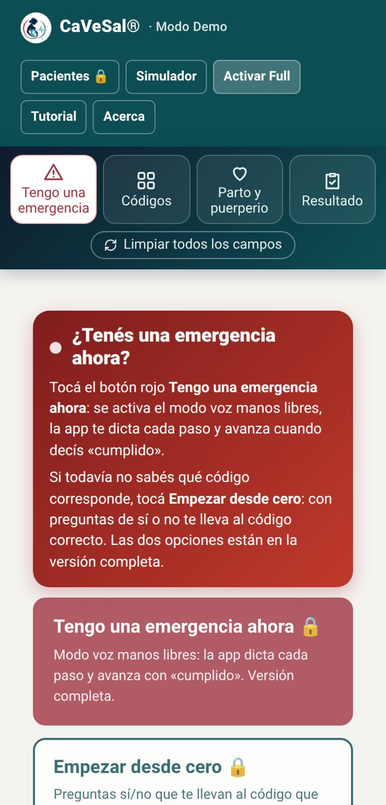
Instalar e ativar
Adquira Emergências sozinho ou em combo na Gumroad, ou por transferência em Comprar sem cartão. Você recebe 1 chave de Emergências por e-mail (formato XXXX-XXXX-XXXX-XXXX). Nos combos chega também a chave de cada app incluído.
Abra cavesal.app/cavesal-emergencias/full/ no dispositivo onde vai usá-lo e instale primeiro: no Android, menu do Chrome e "Instalar app" ou "Adicionar à tela inicial"; no iPhone, botão Compartilhar do Safari e "Adicionar à Tela de Início".
Abra o CaVeSal® pelo ícone instalado, cole sua chave e toque em Activar (Ativar).
Pronto: fica habilitado de forma permanente nesse dispositivo, com as atualizações incluídas.
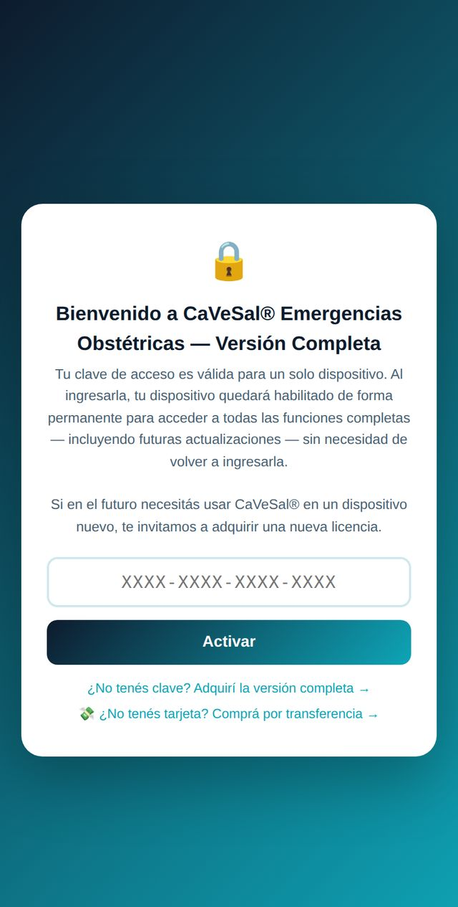
Como o app está organizado
O app sempre abre em Tenho uma emergência, porque numa emergência é preciso resposta rápida. Em cima ficam os botões pequenos; abaixo, as quatro abas grandes, o botão Calcular e Limpar todos os campos, que ficam fixos ao rolar a tela.
Calcular e Limpar todos os campos
- Calcular (botão laranja): aparece em Códigos e em Parto e puerpério. Leva ao Resultado com o resumo de tudo o que você preencheu. Não aparece em Tenho uma emergência, Resultado e Pacientes, porque ali não há nada para calcular.
- Limpar todos os campos (botão pequeno, abaixo): está em todas as abas. Pede confirmação, apaga tudo o que foi preenchido, deixa o Resultado vazio e solta a paciente escolhida para essa emergência. As fichas salvas em Pacientes não são apagadas.
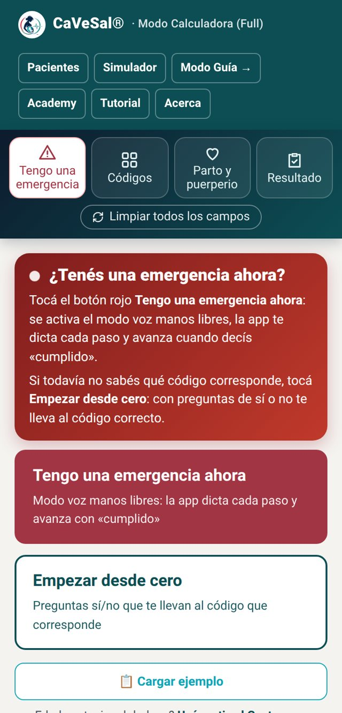
Tenho uma emergência
A primeira aba. Em cima, um aviso vermelho explica como ativar a emergência com o modo voz; abaixo, a entrada rápida, Carregar exemplo, a barra de dados da paciente e a Escala de Alerta Obstétrico.
Entrada rápida: emergência agora ou do zero
- Tenho uma emergência agora: você escolhe o código (Vermelho, SHG, Amarelo ou Azul Obstétrico) e abre o modo voz, que dita cada passo e avança quando você diz «cumprido». Ver Modo voz.
- Começar do zero: perguntas de sim ou não que levam ao código certo quando ainda não está claro o que está acontecendo.
Carregar exemplo Também na demo
Carrega um caso ilustrativo para ver como cada módulo responde: Código Vermelho (choque hipovolêmico), Código SHG (pré-eclâmpsia grave), Código Amarelo (sepse), os três partogramas, dequitação e controle pós-parto de 2 horas. Ao carregar, o app leva ao Resultado com o diagnóstico e a conduta.
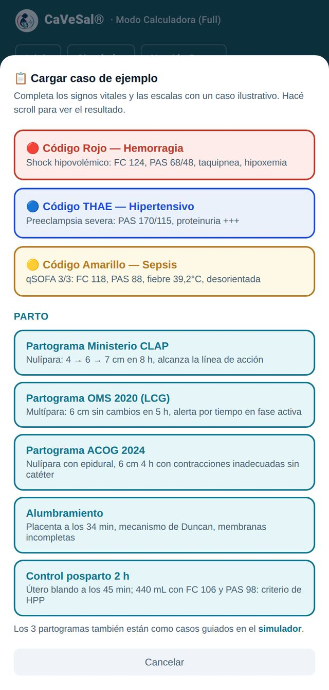
Barra de dados da paciente
Insira peso, altura, DUM, FC, PAS e PAD. O app calcula na hora IMC, idade gestacional, PAM e índice de choque, com cor segundo o limiar. Esses dados são copiados para todas as tabelas enquanto você não os editar em cada uma.
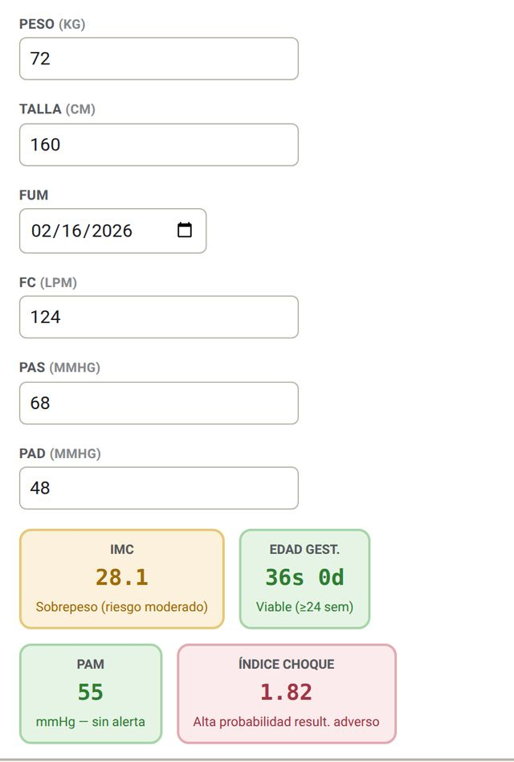
Códigos
A segunda aba mostra quatro botões grandes: Código Vermelho (hemorragia obstétrica), Código SHG (síndromes hipertensivas), Código Amarelo — Sepse e Código Azul Obstétrico (parada e colapso materno). Toque em um para abrir seus cartões, preencha os dados e aperte Calcular.
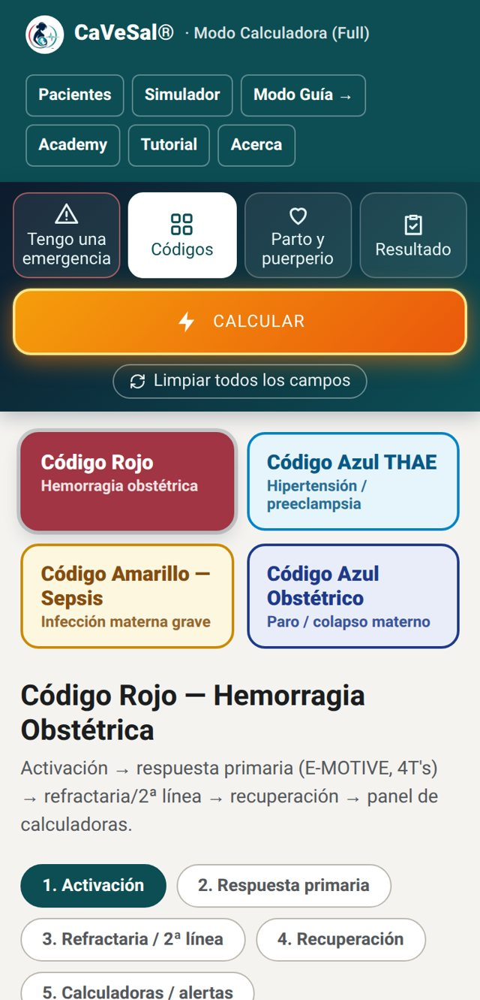
Código Vermelho — Hemorragia obstétrica Versão completa
Sete subabas que seguem a sequência real de atendimento: ativação, resposta primária, refratária, recuperação, calculadoras, sangramento e coagulação, e sangramentos da gestação.
1. Ativação: classificação do choque
Insira sangramento estimado, nível de consciência, perfusão, pulso e PAS. O grau de choque (Vélez 2009) é definido pelo pior parâmetro, e o cartão indica se cabe ativar o Código Vermelho segundo o critério da OMS 2025.
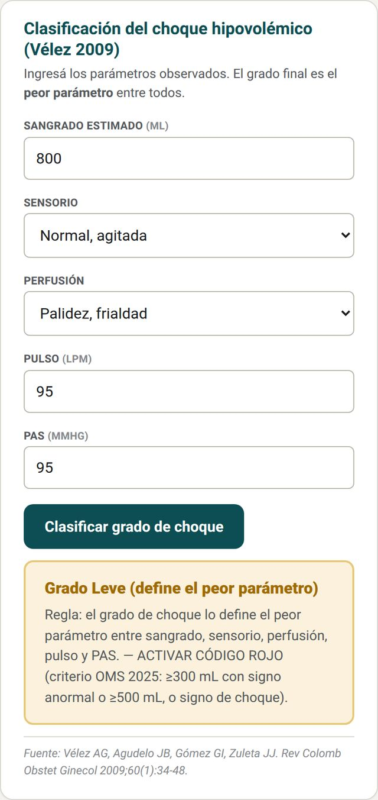
2. Resposta primária: E-MOTIVE e 4T
Lista de verificação do pacote E-MOTIVE (detecção precoce, massagem uterina, ocitócicos, ácido tranexâmico, fluidos e exame) e classificação da causa pelos 4T (tônus, trauma, tecido, trombina).
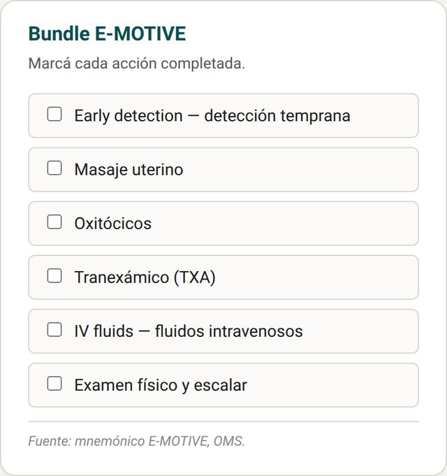
3. Refratária e escalonamento Nível 0-3
Marque as manobras realizadas e o app sugere o nível de resposta: compressão bimanual e aórtica, balão intrauterino, técnica Zea, embolização, hemoderivados, transferência, suturas compressivas, ligaduras vasculares (O'Leary, Posadas, Tsirulnikov, hipogástricas) e histerectomia.
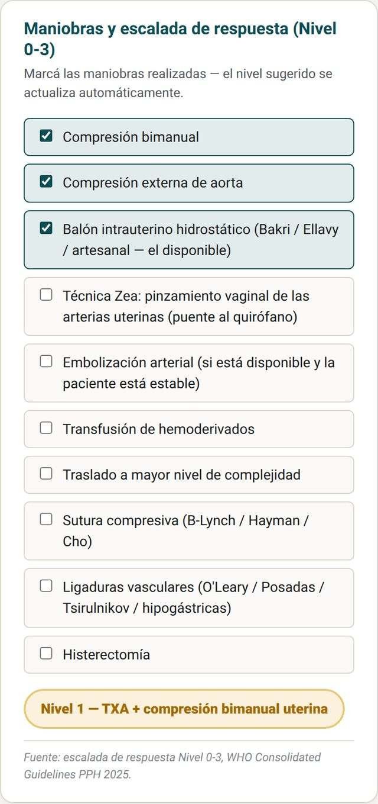
5. Calculadoras e alertas
Escala de Alerta Obstétrico: por padrão EAPO MSPBS 2025/2022, com seletor de escala (incluída a Alerta Obstétrica CaVeSal®). Os sinais vitais são preenchidos automaticamente a partir da barra superior e o cartão lembra a hora de ouro e a frequência de controles segundo a cor.
Síndrome HELLP: seletor de critério (por padrão Mississippi). Com plaquetas, AST/ALT e LDH classifica e propõe a conduta.
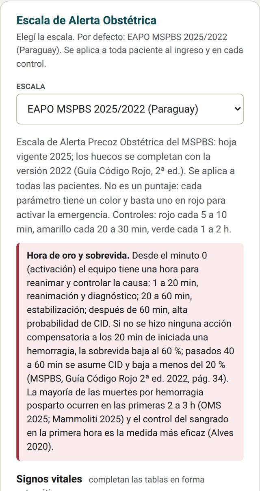
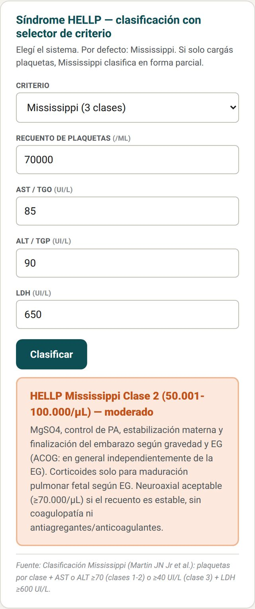
6. Sangramento e coagulação
Volemia estimada e perda sanguínea permitida (com o peso da barra superior), quantificação do sangramento (gravimétrica e aspirado), coagulopatia por laboratório com escores de CIVD, e leitura de ROTEM (EXTEM/FIBTEM) com doses orientativas.
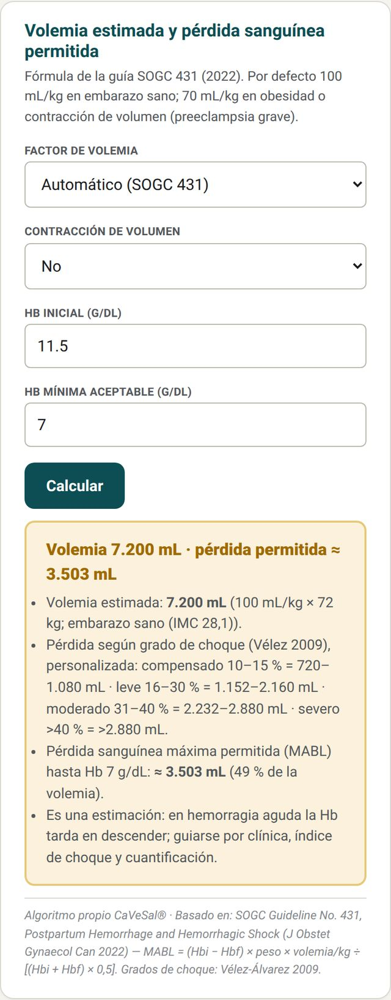
7. Sangramentos da 1ª e 2ª metade da gestação
Fluxogramas passo a passo: você responde cada pergunta e o app avança; pode corrigir qualquer resposta com «cambiar» (mudar).
- 1ª metade: ameaça de aborto e aborto em suas formas, gestação de localização desconhecida, ectópica (com seletor de critérios) e mola (com seletor de seguimento).
- 2ª metade: placenta prévia, descolamento, rotura uterina, vasa prévia e espectro da placenta acreta (com seletor do momento do nascimento).
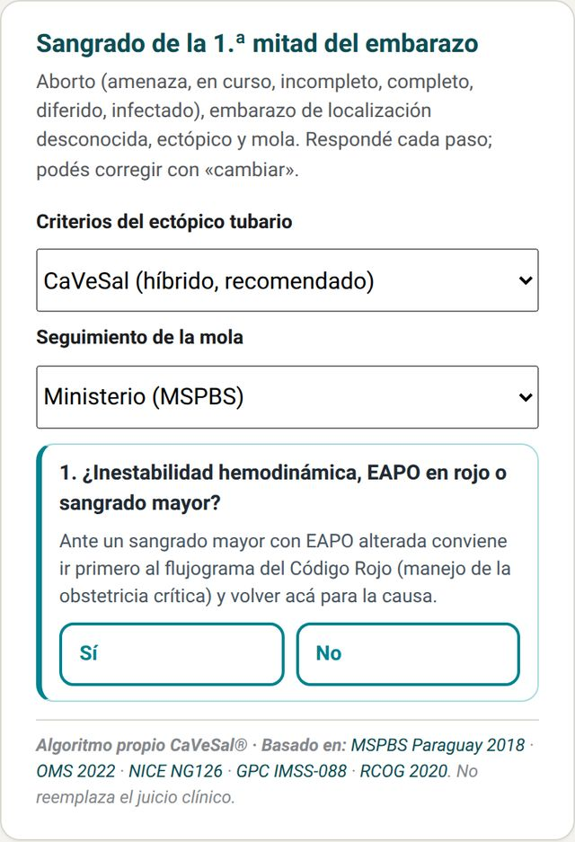
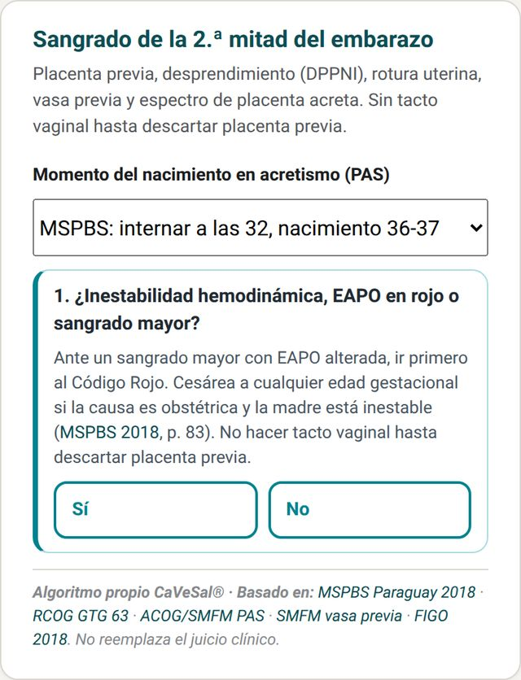
Código SHG — Síndromes hipertensivas Versão completa
Classificação automática com a PA da barra superior, fenótipo hemodinâmico (índice PAM/FC), lesão de órgão-alvo e proteinúria, seletor de anti-hipertensivo, relação sFlt-1/PlGF, Doppler da artéria oftálmica, algoritmo guiado e checklist de eclâmpsia.
Classificação e tratamento
Com PAS ≥160 ou PAD ≥110 o cartão indica hipertensão grave e a indicação de ativar o código. O seletor de anti-hipertensivo mostra dose, intervalo e dose máxima de cada fármaco.
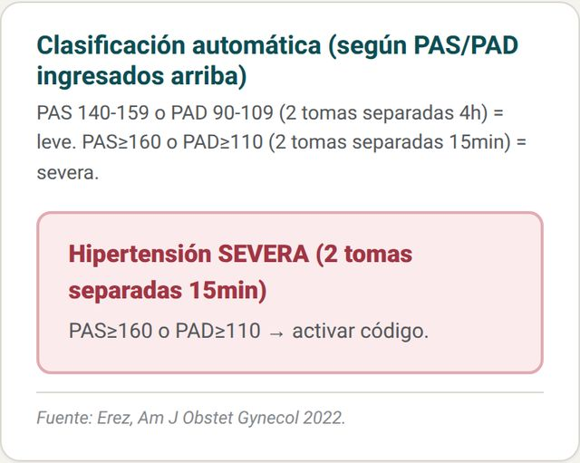
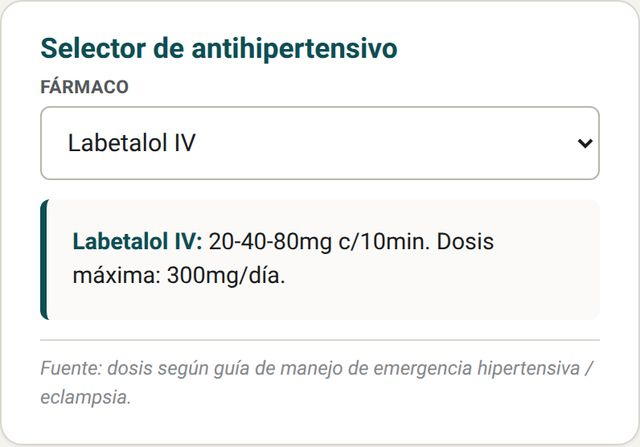
Código Amarelo — Sepse materna Versão completa
Triagem obstétrica OTAS, Critérios da Califórnia, rastreamento comparativo (qSOFA, SIRS e MEOWS), pacote "Sepse 4-5-3" com temporizadores e esquema antibiótico por foco.
Rastreamento e pacote com temporizador
Nenhum escore por si só confirma nem descarta uma sepse: o cartão comparativo esclarece isso. O pacote 4-5-3 dispara os temporizadores de 1, 3 e 6 horas e acompanha a lista do que é preciso coletar, administrar e considerar.
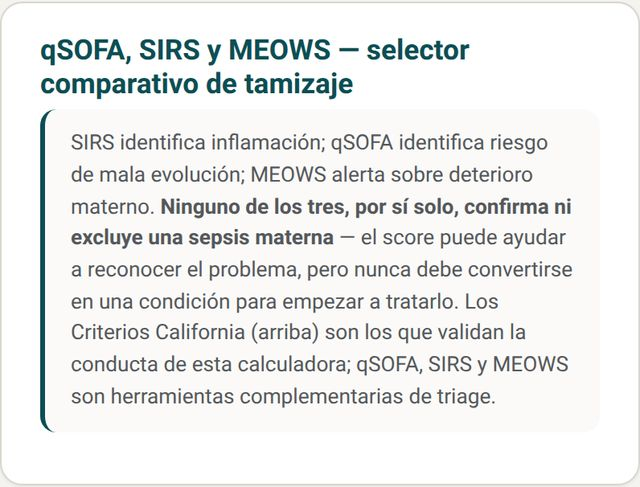
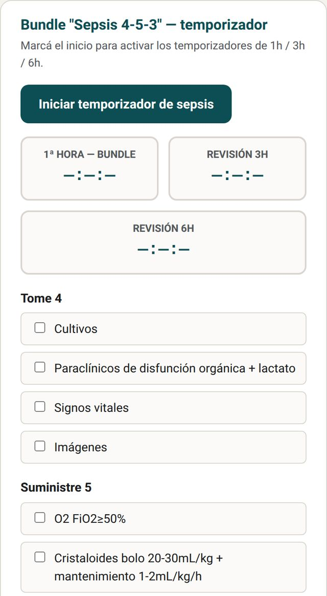
Código Azul Obstétrico — Parada e colapso materno Versão completa
Cronômetro de RCP com a regra dos 4 minutos, checklist de ativação, causas A-H com acesso direto a cada código e emulsão lipídica por peso para a toxicidade por anestésico local.
Cronômetro e regra dos 4 minutos
Toque em «Iniciar paro» (Iniciar parada) no reconhecimento. Se a parada não foi presenciada, use «+1 min» para somar o tempo prévio. A cada 2 minutos soa o aviso de checagem de ritmo. No minuto 4 sem retorno da circulação a tela fica vermelha e soa o alarme para iniciar a histerotomia; no minuto 5 marca o objetivo de nascimento. Com altura uterina abaixo do umbigo não há alarme de histerotomia. Cada evento (adrenalina, choque, histerotomia, nascimento, RCE) fica registrado com seu horário e pode ser copiado para o prontuário. A tela não se apaga enquanto o relógio corre.
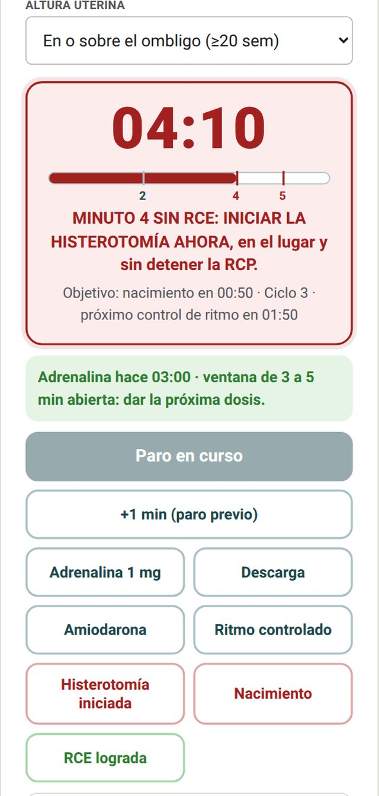
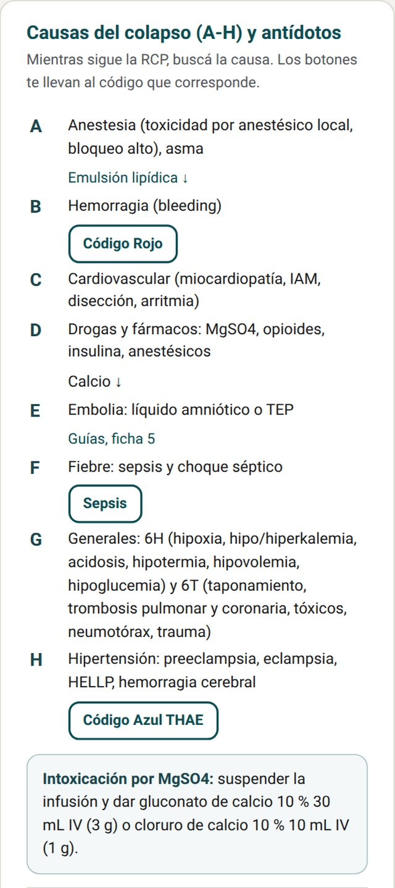
Tromboprofilaxia — sistema semáforo Versão completa
Medidas gerais, escala de risco em quatro cores e calculadora de dose de heparina de baixo peso molecular segundo o peso. Fica dentro da aba Parto e puerpério.
Risco e dose de HBPM
Marque os fatores presentes. O resultado assume a categoria mais grave alcançada e a ação correspondente. A dose é calculada com o peso da barra superior e o fármaco e o tipo de dose escolhidos.
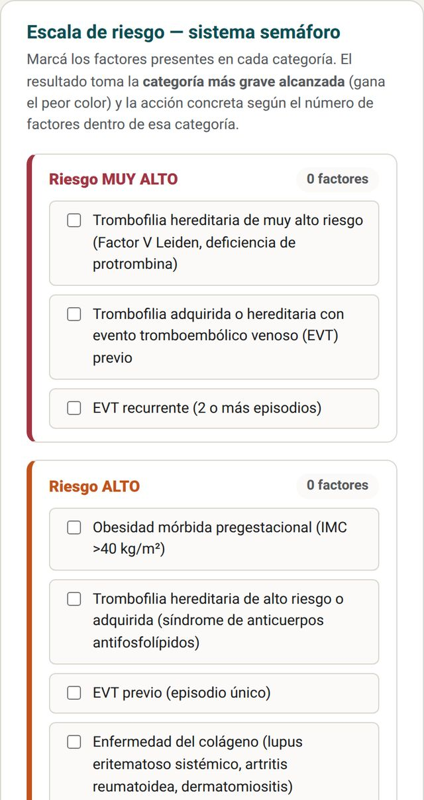
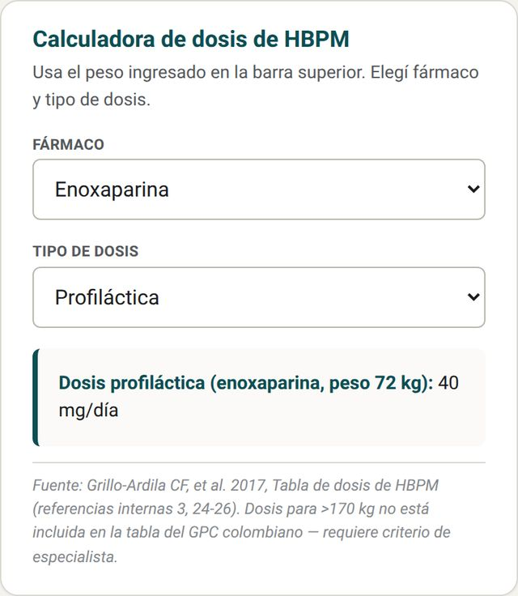
Parto e Puerpério Versão completa
É a terceira aba. Em cima tem atalhos para cada cartão, na ordem de uso na sala de parto. O primeiro, destacado, é Partograma Ministerio (CLAP); depois vêm Robson na admissão, Robson dinâmico, índice de Bishop, contador de contrações, dequitação, controle pós-parto e sulfato de magnésio. Mais abaixo estão RPM e ameaça de parto prematuro, incompetência istmocervical e cerclagem, maturidade pulmonar, tocólise e tromboprofilaxia. Depois de preencher, aperte Calcular.
RPM e TPP
Diagnóstico de RPM com fluxograma de caixas de seleção e conduta segundo a idade gestacional. A maturação pulmonar e a neuroproteção são calculadas igualmente na RPM e na ameaça de parto prematuro. Por padrão usam-se os cortes do MSPBS Paraguai; as variantes de outros guias aparecem no rodapé.
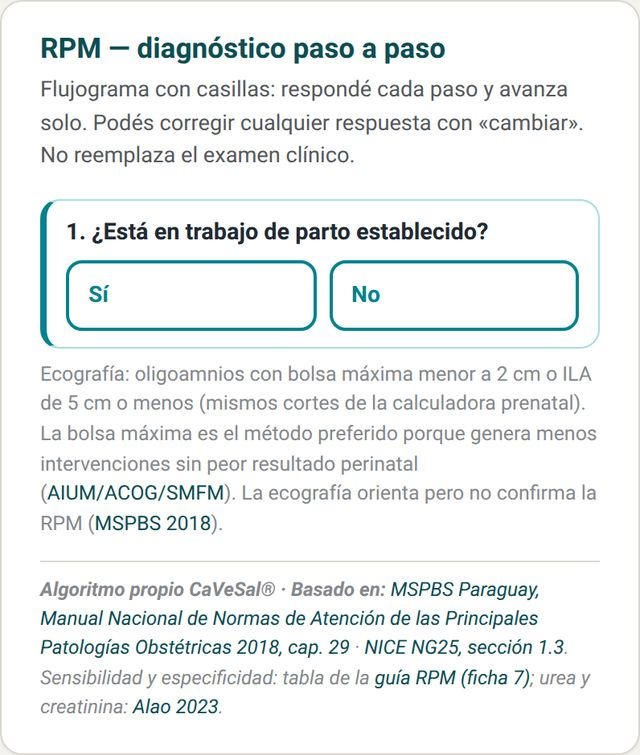
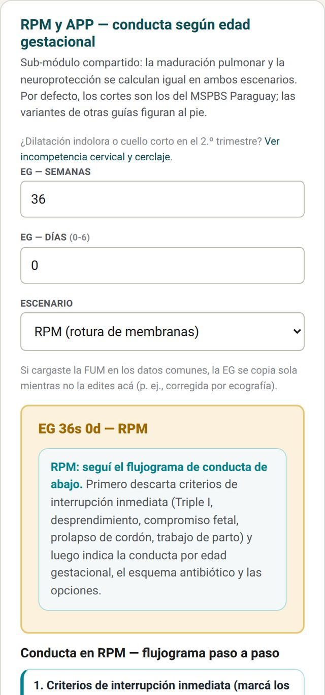
Classificação de Robson na admissão
Na admissão para o parto, insira as 6 variáveis da OMS: paridade, cesáreas prévias, início do trabalho de parto, número de fetos, apresentação e IG. O app atribui o grupo definitivo (com os subgrupos 2a/2b, 4a/4b e 5.1/5.2) e mostra a conduta intraparto desse grupo com suas fontes.
A paridade é compartilhada com o partograma, e a IG é copiada da conduta RPM/TPP ou da DUM. Os links de cada grupo abrem as fichas relacionadas (partograma, dequitação, sulfato de magnésio, tocólise, sinais de rotura uterina no Código Vermelho) e a tabela completa do guia.
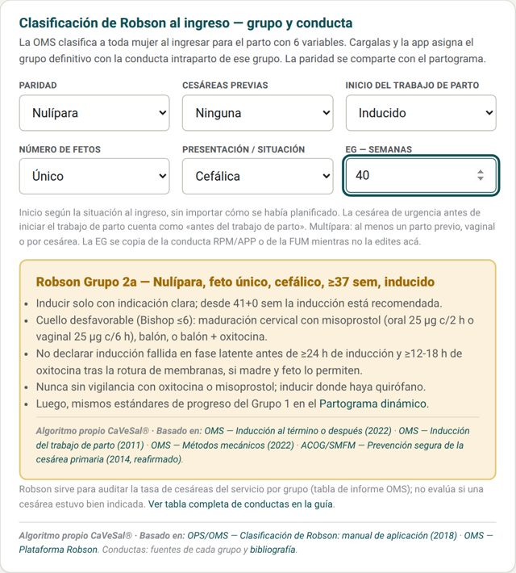
Robson dinâmico
Antes do Robson na admissão está o cartão Robson dinâmico — grupo provável durante a gestação, a mesma lógica da Calculadora Pré-natal. Com paridade, cesáreas prévias, número de fetos, apresentação e a idade gestacional calculada pela DUM, mostra o grupo provável e o plano para essa paciente. Ficam em cartões separados para não confundir o grupo provável com o grupo definitivo; a paridade e as cesáreas são copiadas sozinhas para o Robson na admissão.
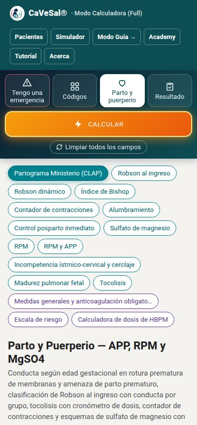
Índice de Bishop
Abaixo do Robson está a ficha Índice de Bishop. Insira dilatação, apagamento, altura da apresentação, consistência e posição do colo: o app soma o escore (0 a 13) e o classifica como favorável (mais de 8), intermediário (7–8) ou desfavorável (6 ou menos, maturação cervical), segundo NICE NG207 e o trabalho original de Bishop (1964, 9 ou mais); esclarece que a ACOG 2025 não fixa um corte universal. Com os três primeiros dados já mostra o Bishop simplificado (mais de 5, favorável; Laughon 2011).
Com a paridade do Robson indica até onde continuar a maturação (8 ou mais em nulíparas, 6 ou mais em multíparas, CMQCC). Nos grupos 2a e 4a o resultado aparece dentro da conduta do Robson, e o assistente de RPM o mostra ao perguntar as condições cervicais.
Tocólise e partograma
Tocólise: seletor de fármaco com doses de ataque e manutenção, e um cronômetro que avisa cada tomada.
Partograma dinâmico: três modelos (Ministério/CLAP, OMS 2020 e ACOG 2024). Você registra cada avaliação; o gráfico e a interpretação mudam segundo o modelo, e os dados são mantidos ao trocar de modelo. Em Próximo control en (Próximo controle em) você escolhe a frequência (1 hora, 30 minutos, 15 minutos ou outro valor): por exemplo, a cada 1 hora no início e a cada 30 minutos depois. O aviso mostra «ahora» (agora) quando chega a hora, mas você pode registrar um controle antes, a qualquer momento. Se registrar um controle com horário anterior ao último (um que ficou sem anotar), ele fica no lugar certo do gráfico.
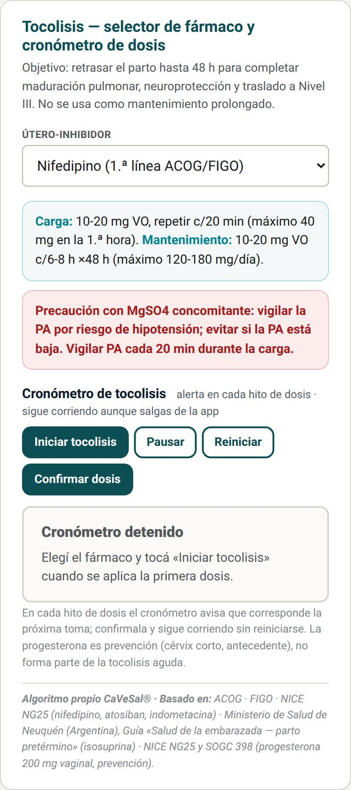
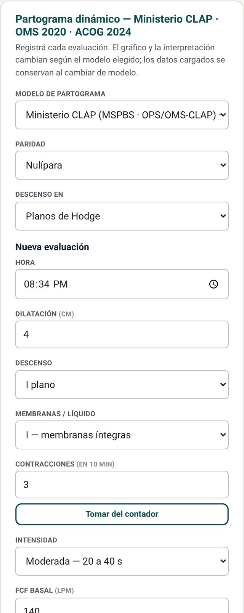
Sulfato de magnésio
Escolha a indicação (por exemplo, neuroproteção fetal antes de 32 semanas ou prevenção de eclâmpsia) e o app monta a dose de ataque, a manutenção e o gotejamento. O monitor de toxicidade registra frequência respiratória, diurese e reflexo patelar, e indica se há critérios de suspensão.
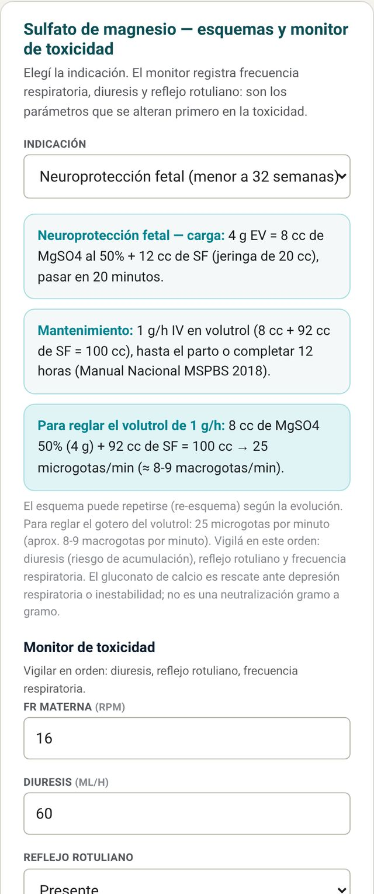
Resultado Também na demo
A quarta aba reúne num só lugar o diagnóstico e a conduta de tudo o que você calculou em Códigos e em Parto e puerpério.
Como ler
- Sem dados: diz «Você não tem dados preenchidos» e indica preencher os dados em Códigos ou em Parto e puerpério e apertar Calcular. Nenhuma cor é mostrada.
- Partograma: se você registrou controles e aperta Calcular em Parto e puerpério, o partograma abre em tela cheia: no topo o diagnóstico com sua cor, o gráfico com as linhas de alerta e ação, o próximo controle e a tabela de evolução com hora, dilatação, descida, BCF, contrações e avanço em cm/h. «Registrar nuevo control» (Registrar novo controle) volta ao cartão com a hora atual; com o celular deitado o gráfico aparece inteiro. No Resultado também há o botão «Ver en pantalla completa» (Ver em tela cheia).
- Classificação por gravidade: Verde, Amarelo, Laranja e Vermelho. Em cima aparece o nível mais alto de tudo o que foi calculado.
- Só entra o que você preencheu: uma escala que você não tocou não soma ao resultado, mesmo que o cartão mostre um valor padrão.
- Abaixo, cada achado com sua conduta, agrupado por código ou por cartão de parto.
- Analisar com CaVeSal® IA: a robozinha convida você a enviar o caso para uma segunda leitura com as diretrizes. Nome e documento não são enviados.
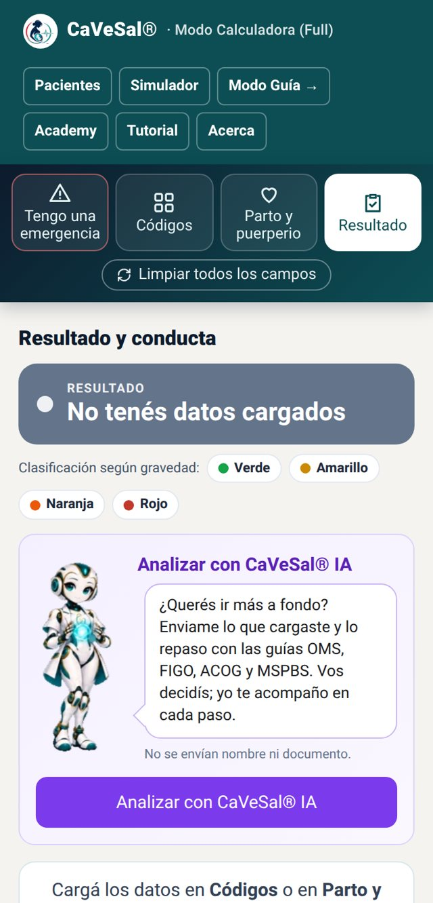
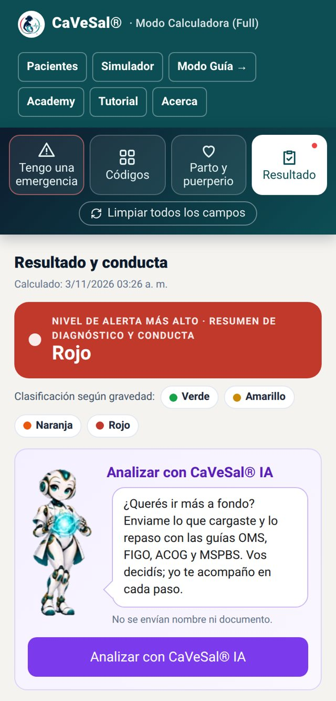
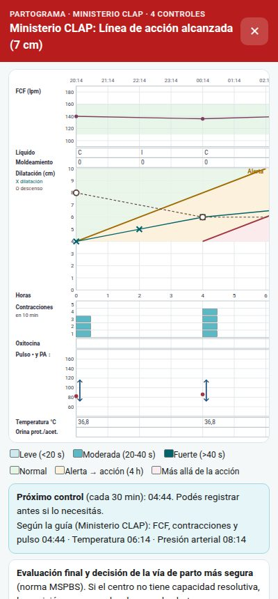
Salvar e exportar Versão completa
Se você escolheu uma paciente, o Resultado a mostra com o botão Salvar na ficha. Também é possível salvar o caso como arquivo, abrir um salvo ou exportar o resultado em PDF ou Word. Na demo o Resultado aparece, mas sem salvar nem exportar.
Pacientes Versão completa
Abre pelo botão Pacientes de cima. Os dados ficam só no seu dispositivo e não são enviados à CaVeSal® IA.
Fichas, casos e exportação
Toque em + Nova, preencha nome, idade, prontuário ou documento e notas, e toque em Salvar e usar nesta emergência. Também é possível buscar uma paciente existente e tocar em Usar nesta emergência.
Preencha os dados da emergência, aperte Calcular e, no Resultado, toque em Salvar na ficha.
Na ficha, Casos lista cada emergência salva com data e nível. Cada caso pode ser Aberto (recarrega os dados e mostra o Resultado), exportado em PDF ou Word, ou apagado.
Os botões PDF e Word da ficha exportam o resumo da paciente: seus dados e todos os seus casos, o último primeiro. Se ainda não houver casos salvos, o app avisa.
Baixar backup (.json) salva todas as suas pacientes num arquivo; Importar backup as soma em outro aparelho sem apagar as que você já tem.
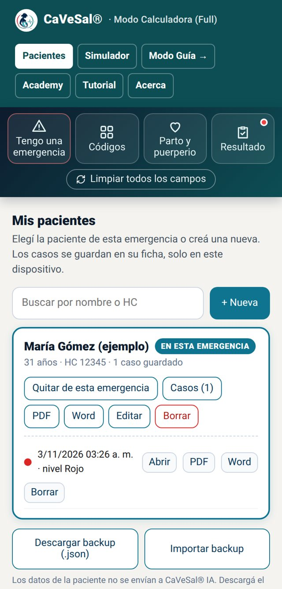
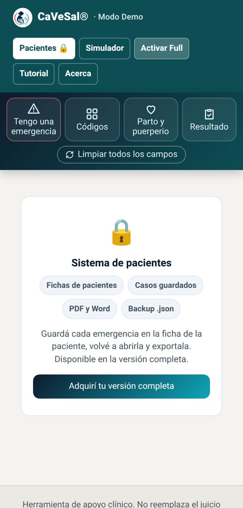
Modo voz mãos livres Versão completa
Para quando você está com as mãos ocupadas: o app dita cada passo em voz alta e avança quando a equipe confirma.
Como funciona
Toque em Tengo una emergencia ahora (Tenho uma emergência agora) e escolha o código: Vermelho (hemorragia), SHG (hipertensão grave), Amarelo (sepse) ou Azul (parada e colapso).
Aceite a permissão do microfone. O relógio começa no minuto zero e no alto aparecem as fases do código.
Diga «cumplido» (cumprido) para avançar, «repetir» (repetir), «atrás» (voltar), «sí» (sim) ou «no» (não). Você também pode usar os botões da tela.
Ao encerrar o código fica o registro com horário de cada passo.
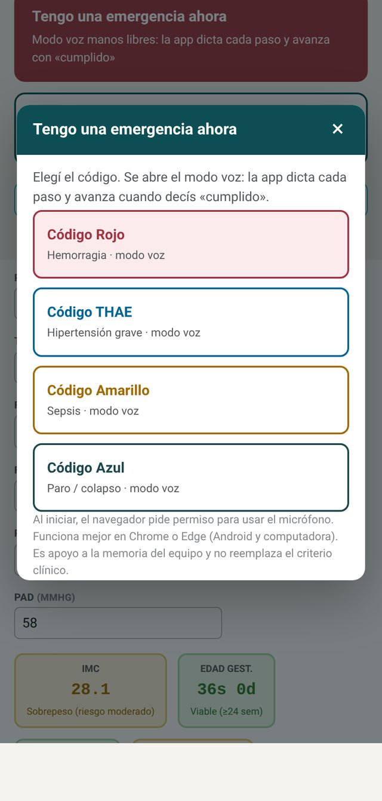
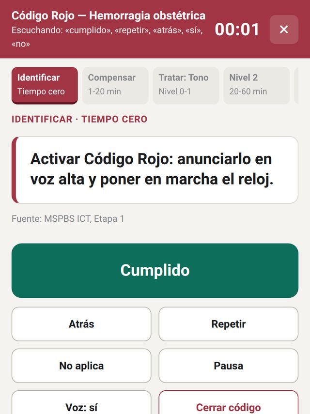
Modo Guia e bibliografia Versão completa
O guia de acesso rápido diante de uma emergência obstétrica: definições, classificações, fluxogramas, doses e técnicas de cada código, com as variantes de cada guia e sua referência.
Como buscar
Use a busca por palavra-chave (por exemplo: partograma, código vermelho, sangramento, tromboprofilaxia), o glossário ou a autoavaliação. Cada código tem seu próprio guia expansível. A bibliografia completa, com links para as fontes, está na página de bibliografia. O guia também está disponível em português e inglês.
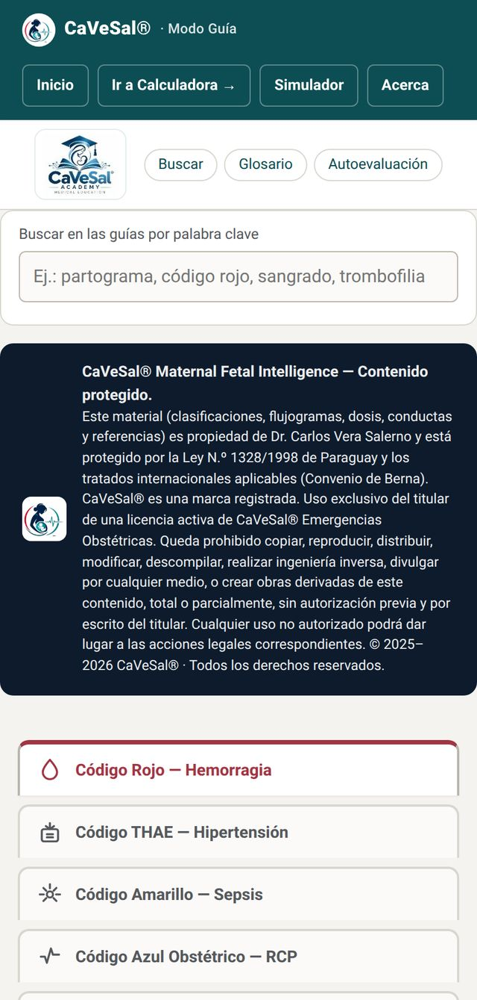
Simulador Também na demo
Doze casos fictícios para treinar a equipe: emergências maternas, Escala de Alerta, trabalho de parto com partogramas, Código Azul Obstétrico (RCP) e modo voz.
Como se joga
O app apresenta a paciente, você decide e o caso reage, com monitor de sinais vitais. No final você recebe o retorno com a fonte de cada resposta. Pode ativar o relógio para praticar com tempo limite por decisão.
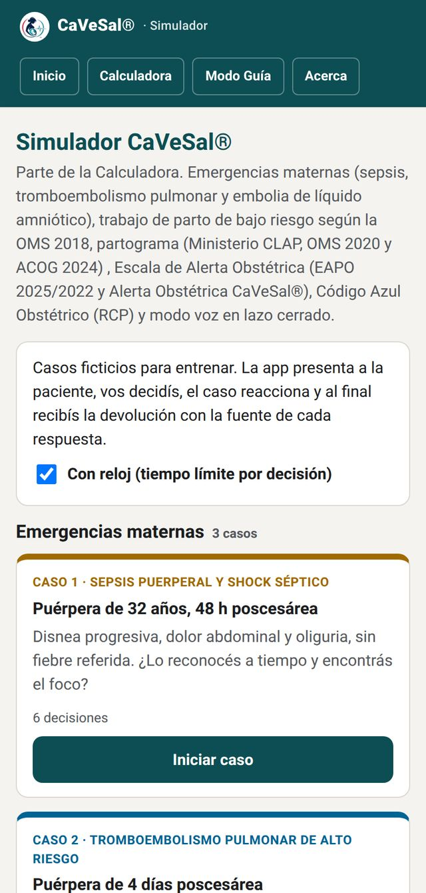
Sobre e aviso legal
Autor clínico, bases clínicas, ecossistema CaVeSal® com os QR de cada app, e links para preços, termos e privacidade.
Aviso legal
O CaVeSal® é uma ferramenta de apoio à decisão clínica para profissionais de saúde. Não diagnostica, não substitui o julgamento clínico do médico responsável nem a avaliação individualizada, e não é um dispositivo médico. As decisões clínicas são de responsabilidade exclusiva do profissional.
O CaVeSal® implementa algoritmos próprios, desenvolvidos a partir das referências citadas em cada cartão. A menção a guias, sociedades e instituições (MSPBS, OMS, FIGO, NICE, RCOG, ACOG, SMFM, Surviving Sepsis Campaign, AHA, entre outras) tem fins de atribuição bibliográfica; nenhuma delas patrocina, endossa ou certifica o CaVeSal®.
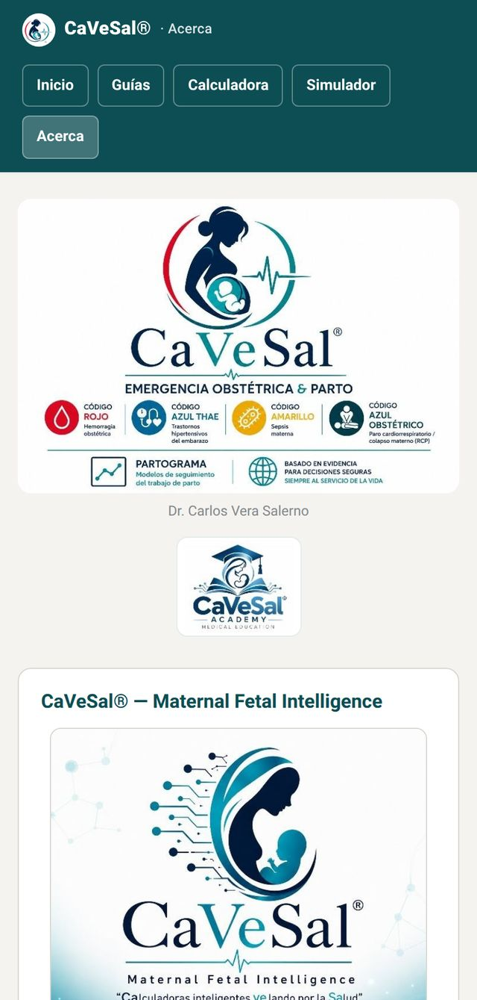
Dúvidas sobre algum módulo? Escreva para drverasalerno@gmail.com · Dr. Carlos Vera Salerno · CaVeSal® · Última atualização: outubro de 2026